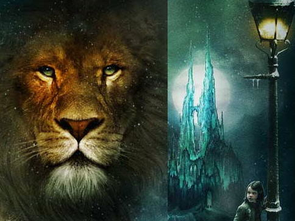

Enredo
E, à medida que Ele falava, já não lhes parecia mais um leão. E as coisas que começaram a acontecer a partir daquele momento eram tão lindas e grandiosas que não consigo descrevê-las. Para nós, este é o fim de todas as histórias, e podemos dizer, com absoluta certeza, que todos viveram felizes para sempre. Para eles, porém, este foi apenas o começo da verdadeira história. Toda a vida deles neste mundo e todas as suas aventuras em Nárnia haviam sido apenas a capa e a primeira página do livro. Agora, finalmente, estavam começando o Capítulo Um da Grande História que ninguém na terra jamais leu: a história que continua eternamente e na qual cada capítulo é muito melhor do que o anterior.
(A Última Batalha)As Crônicas de Nárnia

Sobre o Jogo
The Last of Us é um jogo eletrônico de ação-aventura e sobrevivência desenvolvido pela Naughty Dog e publicado pela Sony Computer Entertainment. Ele foi lançado exclusivamente para PlayStation 3 em 14 de junho de 2013. Na história, os jogadores controlam Joel, um homem encarregado de escoltar uma adolescente chamada Ellie através de um Estados Unidos pós-apocalíptico. The Last of Us é jogado a partir de uma perspectiva em terceira pessoa, com os jogadores usando armas de fogo, armas improvisadas e furtividade a fim de defenderem-se de humanos hostis e criaturas canibalísticas infectadas por uma mutação do fungo Cordyceps. Um "Modo de Escuta" permite a localização de inimigos por meio de uma escuta e percepção espacial aprimoradas. Armas podem ser melhoradas usando itens recolhidos do ambiente. Há um modo multijogador online em que até oito jogadores podem entrar em diferentes modos de partidas cooperativas ou competitivas.
Como criar variáveis no código CSS
Assim como nas liguangens de programação uma variável carrega um valor que pode ser recuperado em outro
momento do programa.
Estruturas com o uso de variáveis são importantes quando sofrem interação do usuário, mas no caso do
CSS, pode ser usado para padronização de estilos.
Define-se a variável numa área raiz (root) que será informada para o DOM dentro do estilo carregado. No
caso do CSS as variáveis deve conter um prefixo de dois hifens (--) e após dois pontos, o valor a ser
armazenado, encerrando a definição com ponto e virgula, como no exemplo abaixo:
:root {
--amarelo: #F9D423;
}
Como aplicar as variáveis no código CSS
Uma vez definido uma variável, na estrutura do CSS onde ela se aplica, basta usar a instrução "var" e o
nome da variável entre parênteses. Veja o exemplo abaixo:
.bgAmarelo {background-color: var(--amarelo);}